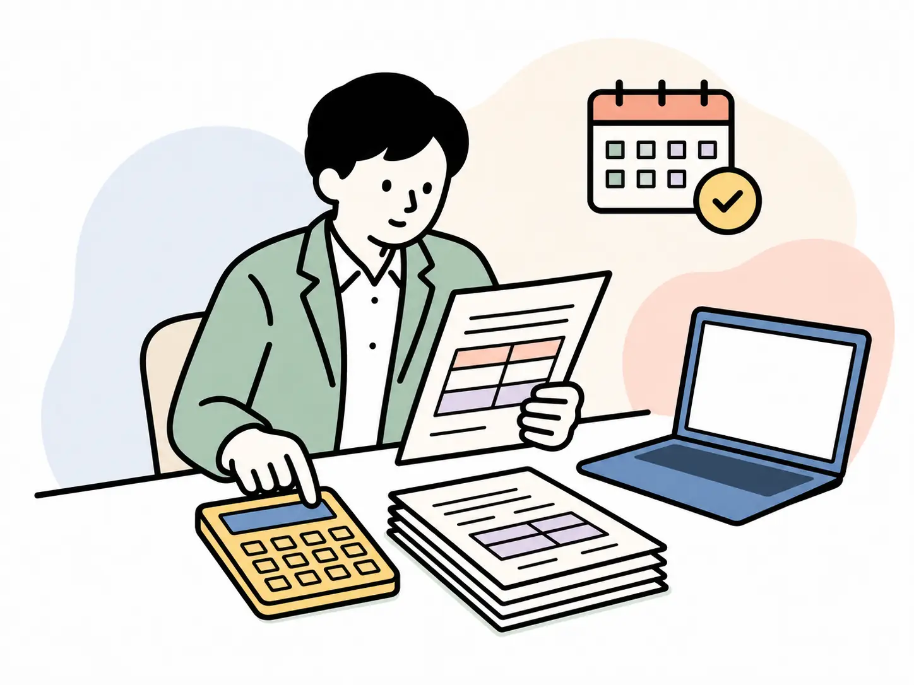
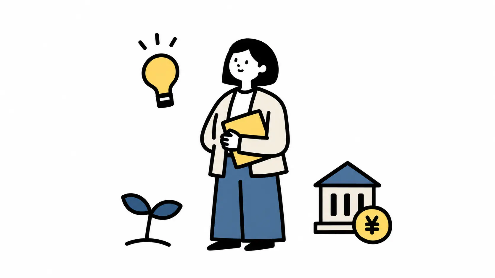
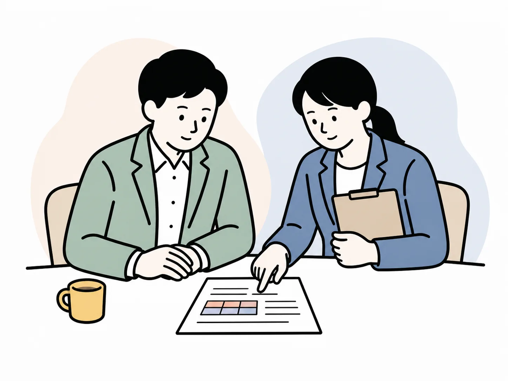

手続きが発生してから、期限と書類を調べる
入退社や
富山県の中小企業へ
給与計算も、労働社会保険の手続きも、
月25,000円から（税抜）給
創業3年を
相談は
助成金は
01 / 社内だけで
給与締め、
入退社や
勤怠、
期限、

その
スタート顧問
時間と
02 / 社労士に
会社から
実務を
入退社や
勤怠・
処理結果、
03 / 任せられる
給与計算・
毎月・定例の実務
導入・申請などの
別料金の
04 / 年に
労働保険の年度更新（
毎年 6〜7月
顧問契約が
月額顧問料に含む
毎年 7月
顧問契約が
月額顧問料に含む
賞与のつど
顧問契約が
月額顧問料に含む
従業員5名・
スタート顧問は
金額は
05 / 助成金
難しいのは、
なぜ助成金を勧めるのか
自治体独自の
制度は
毎月の
一部に
どうやって対象に
この
確認
この
制度を
毎月の
要件は

何を
勤怠・賃金・雇用の
会社の
必要な
06 / 料金
給与計算なしの
11人目以降は
相談は
07 / 初回の
依頼内容が

会社規模と
現状と
月額に
必要資料、
初回相談は
今の
08 / よくある質問
09 / 担当する
お引き
給与計算と
現在の